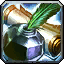
This Battle for Azeroth Inscription leveling guide will help you to level your profession from 1 to 175. The guide's primary focus is to show you how to level this profession, so if you are looking for more detailed information about BfA Inscription, check out my Battle for Azeroth Inscription guide.Inscription is the best combined with Herbalism because you can save a lot of gold by farming the needed herbs, so check out my BfA Herbalism leveling guide if you want to level Herbalism.
Learning BfA Inscription
The new BfA Inscription skill is named differently for the two factions, but the name is the only difference between them.
 Kul Tiran Inscription is the Alliance version and
Kul Tiran Inscription is the Alliance version and  Zandalari Inscription is the Horde version.
Zandalari Inscription is the Horde version.
Inscription Trainers:
 Horde: You can find Chronicler Grazzul in Dazar'alor at the Terrace of Crafters. Coordinates: /way 42.3, 39.6
Horde: You can find Chronicler Grazzul in Dazar'alor at the Terrace of Crafters. Coordinates: /way 42.3, 39.6 Alliance: Zooey Inksprocket is in Boralus at the Tradewinds Market. Coordinates: /way 73.4, 6.33
Alliance: Zooey Inksprocket is in Boralus at the Tradewinds Market. Coordinates: /way 73.4, 6.33
{kind=link}
{kind=link}
You can walk up to a guard in Dazar'alor or Boralus then ask where the Inscription trainer is. Asking the guard will place a red marker on your map at the trainer's location.
Nightborne characters have +15 Inscription skill because of their passive Ancient History. An extra 15 Inscription skill means recipes stay orange for 15 more points. You can save a lot of gold by doing lower level recipes for 15 more points.
Milling and Pigments
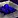 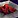
- Anchor Weed
- Akunda's Bite
- Winter's Kiss
- Sea Stalk
- Star Moss
- Siren's Pollen
- Riverbud
Pigment rarity:
- Ultramarine Pigment ~75%
- Crimson Pigment ~25%
- Viridescent Pigment ~10% ( Anchor Weed gives ~30%)
Leveling BfA Inscription
1 - 25
Milling gives skill points up to 25. Mill around 100-150 of one herb to reach 25.
25 - 50
Now turn all your pigments you just milled into inks until you reach 50.
Do not mill more herbs than you need to reach 50 because you will unlock Mass Mill at 50, which will give skill points up to 80.
You can buy Light Parchment, 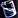
50 - 80
You will need around 900 Ultramarine Ink, 550 Crimson Ink, and 50 Viridescent Ink to reach 145. (These are the total inks you will use later in the guide.)
Use the Mass Mill spell that you learned from your trainer to Mass mill any herb. You will use the pigments to make Inks, and then use the Inks to level up Inscription, so these are basically free skill points.
Make War-Scroll of Battle Shout if you don't want to mill herbs.
80 - 85
8 x War-Scroll of Battle Shout - 64 Crimson Ink
This recipe will be yellow, so you will have to make around 5-8.
85 - 140
- Alliance: 60 x Rank 2 - Contract: 7th Legion - 900 x Ultramarine Ink, 480 x Crimson Ink
- Horde: 60 x
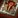
Rank 2 - Contract: The Honorbound - 900 x Ultramarine Ink, 480 x Crimson Ink
These recipes are locked behind Honored reputation, but reaching honored with one of these factions is really easy. You can reach Honored just by completing your War Campaign quests and then doing a few faction Assaults.
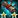
Rank 2 - Recipe: Contract: 7th Legion is sold by Vindicator Jaelaana. It requires 7th Legion Honored reputation.- Rank 2 - Recipe: Contract: The Honorbound is sold by Ransa Greyfeather. Requires The Honorbound Honored reputation
Alternative recipes
It's a good idea to make a few different contract recipes because it's easier to sell them at the Auction House. You should only make these if you can buy the rank 2 version because Rank 2 recipes will give skill points longer, and also cost fewer materials, and you should only make them until they turn yellow at 105. (unless you get the rank 3)
Check your map daily and look for Inscription World quests like "Work Order: Contract: Talanji's Expedition". These reward you with the rank 3 recipe, which is even better, and you can make contracts up to around 130. (you have to get the rank 2 to learn the rank 3)
Rank 2 recipes
Horde:
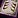
Contract: Talanji's Expedition sold by Provisioner Lija. Requires Talanji's Expedition Honored reputation.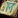
Contract: Voldunai sold by Hoarder Jena. Requires Voldunai Honored reputation.- Contract: Zandalari Empire sold by Natal'hakata. It requires Zandalari Empire Honored reputation.
Alliance:
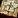
Contract: Order of Embers sold by Quartermaster Alcorn. It requires Order of Embers Honored reputation.- Contract: Proudmoore Admiralty sold by Provisioner Fray. It requires Proudmoore Admiralty Honored reputation.
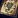
Contract: Storm's Wake sold by Sister Lilyana. It requires Storm's Wake Honored reputation.
Neutral:
- Contract: Champions of Azeroth sold by Collector Kojo. Requires Tortollan Seekers Honored.
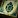
Contract: Tortollan Seekers sold by Collector Kojo. Requires Tortollan Seekers Honored reputation.
140 - 145
You can continue to make contracts, but I recommend switching to Darkmoon Cards because you will only get skill points every 2-3 craft from the contracts, and you should have some Viridescent Ink from milling anyway.
5 x Rank 2 - Darkmoon Card of War - 5 Light Parchment, 50 Viridescent Ink, 5 Expulsom
You will need a few Expulsom to craft the Darkmoon Cards, so check out my guide on How to get Expulsom, if you don't know how to get this crafting item.
If you are Revered with the Tortollan Seekers, then you can buy the Rank 3 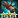
145 - 175
Visit your trainer  Narv (Horde) /
Narv (Horde) /  Instructor Okanu (Alliance) at Nazjatar and learn the new recipes. (You have to finish the first few intro quest at Nazjatar before you can see these NPCs.)
Instructor Okanu (Alliance) at Nazjatar and learn the new recipes. (You have to finish the first few intro quest at Nazjatar before you can see these NPCs.)
100 x 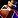
You will need to mill around 150 Zin'anthid to get enough Maroon Pigment. But don't mill all of your herbs because you will learn Mass Mill Zin'anthid at 155 and you can get 4-5 skill points by Mass milling the rest of your herbs, so you should mill herbs/make inks until you reach 155, then mass mill the rest.
I hope you liked this BfA Inscription leveling guide, congratulations on reaching 175!